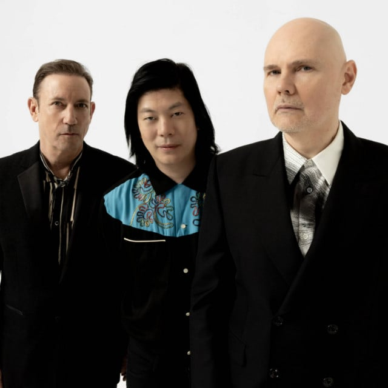

The Smashing Pumpkins
Years Active: 1988–2000, 2006–present
Genre/s: Alternative rock
Label/s: Caroline, Constantinople, Hut, Martha's Music, Rocket Science, Virgin, BMG, Reprise, Warner Bros., Sub Pop, Napalm, Sumerian
Members: Billy Corgan, James Iha, Jimmy Chamberlin
The Smashing Pumpkins (also simply known as Smashing Pumpkins) are an American alternative rock band formed in Chicago in 1988 by lead vocalist and guitarist Billy Corgan, guitarist James Iha, bassist D'arcy Wretzky and drummer Jimmy Chamberlin. The band has undergone several line-up changes since their reunion in 2006, with Corgan being the primary songwriter and sole constant member since its inception. The current lineup consists of Corgan, Iha, and Chamberlin. The band is known for its diverse, densely layered sound, which evolved throughout their career and has integrated elements of gothic rock, heavy metal, grunge, psychedelic rock, progressive rock, shoegaze, dream pop, and electronica.
The band's 1991 debut album, Gish, was well-received by critics and became an underground success. In the advent of alternative rock's mainstream breakthrough, their second album, Siamese Dream (1993), established the band's popularity. Despite a tumultuous recording process, the album received widespread acclaim and has been lauded as one of the best albums in the genre. Their third album, Mellon Collie and the Infinite Sadness (1995), furthered the band's popularity; it debuted atop the Billboard 200, received a Diamond certification from the Recording Industry Association of America (RIAA), and continued the band's critical success. After the release of Adore in 1998 and a two-part project in 2000—Machina and Machina II—the group disbanded due to internal conflicts, drug use, and diminishing sales by the end of the 1990s. With 30 million albums sold worldwide, the Smashing Pumpkins were among the most critically and commercially successful bands of the 1990s, and an important act in the popularization of alternative rock.
In 2006, Corgan and Chamberlin reconvened to record the band's seventh album, Zeitgeist. After touring throughout 2007 and 2008 with a lineup including new guitarist Jeff Schroeder, Chamberlin left the band in early 2009. Later that year, Corgan began a new recording series with a rotating lineup of musicians entitled Teargarden by Kaleidyscope, which encompassed stand-alone singles, EP releases, and two full albums that also fell under the project's scope—Oceania in 2012 and Monuments to an Elegy in 2014. Chamberlin became a touring member in 2015, before officially rejoining with Iha in 2018. The reunited lineup then released the albums Shiny and Oh So Bright, Vol. 1 / LP: No Past. No Future. No Sun. in 2018 and Cyr in 2020, in addition to Atum: A Rock Opera in Three Acts across three increments between 2022 and 2023. Schroeder departed from the band in October 2023. Following Schroeder's departure, the band's remaining members released Aghori Mhori Mei in 2024.